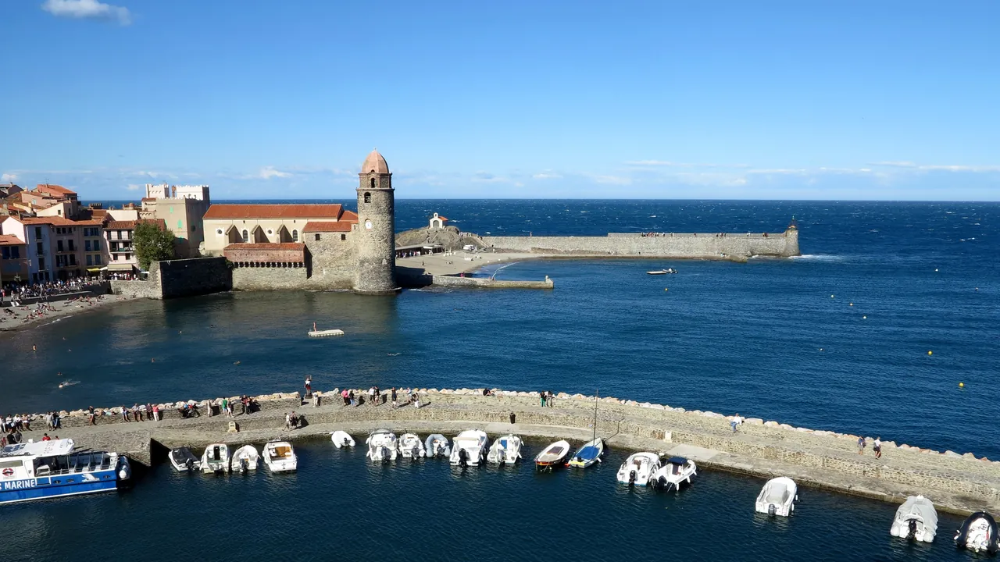
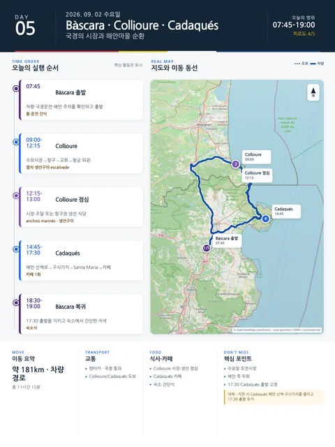

Day 5 · 9/2 수 · Bàscara

오늘의 주요 장소

- 핵심 실행
- Collioure·Cadaqués
- 권장 출발
- 07:45 출발
- 완충
- 오전 10시 이전 Collioure 주차
시간표
이 날은 원고에 시각표가 없다. 구간 일정은 일정 한눈에 에 있다.
이 날의 장소
일자별 시간표와 본문 표기에서 찾은 것이다. 하루의 전부가 아니라 장소 카드가 있는 것만 담는다.
상세 실행 확인
- 최고 리스크
- 해안 쪽 우회·주차·지도 재확인
- 우선 삭제
- Cadaqués 해안 산책·구시가지
- 대체안
- 17:30 Bàscara 출발
- 식사·휴식
- Collioure 09:00–12:15·Cadaqués 14:45–17:30
- 잠금 필요
- Portlligat·Dalí House 예약 미확인
인터랙티브 실행지도
Collioure 오전 장날과 Cadaqués 해안 쪽 우회
인터랙티브 지도를 준비하고 있습니다.
Daily Action Map

실제 좌표와 OpenStreetMap을 사용한 실행용 요약입니다. 도로·대중교통 상황은 출발 직전에 다시 확인하세요.